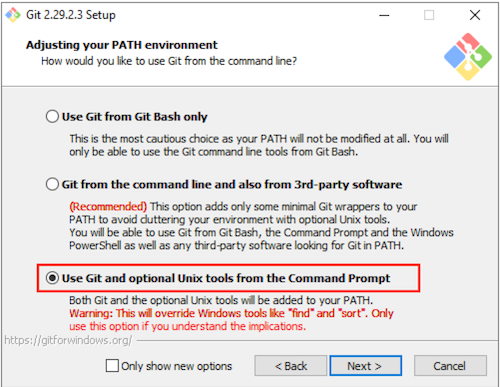
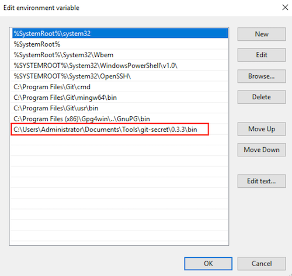

Git加密存储文件
本文最后更新于：2020年12月29日 下午
不要将包含用户名、密码、API令牌(Token)等各类敏感信息放在Git代码仓库中已经成为了大家的共识，尤其是代码仓库托管在GitHub、GitLab、Bitbucket等提供公共代码仓库服务的平台上时，更需要且值得任何的代价去尽量避免这种事情的发生。本文介绍并使用git-secret将文件加密后存储在Git代码仓库中，以及基于git-secret的多人协同工作的流程。
私有仓库是否安全
也许有人会说：”我把代码仓库设成私有的不就安全了？“，然而情况并非如此，因为即使是私有仓库，也同样面临着不同类型的风险。当你集成某个第三方服务到你的私有仓库（比如集成第三方的持续集成服务）时，你的私有仓库就开放给了第三方服务，这些第三方服务就有可能读取你存储在代码仓库中的敏感信息。如果第三方服务遭受了黑客攻击，那么黑客就可以通过这个第三方服务获取你的Git仓库中的敏感信息。
为什么还要将敏感信息放在Git代码仓库中
正如文初谈到的”不要将敏感信息放在Git代码仓库中已是共识“，那为什么还用谈将敏感信息放在Git代码仓库中？正所谓无风不起浪，存在即合理。抛开敏感信息这个特征不谈，包含这些信息的文件其实和我们的代码文件没什么区别，如果不放在Git仓库中，就不能对它们做版本管理，比如对文件名和路径的变更，密码等敏感信息的变更，新信息的添加等都没法追踪它们的变更记录，尤其在构建一个自动部署系统时，你就不得不维护一个额外的安全服务来加密存储这些包含敏感信息的配置文件，而自动部署系统也需要设计额外的方法和步骤来读取这些配置文件，更为麻烦的是自动部署系统无法通过Git变更记录来指定使用的配置文件的版本。
git-secret的原理
既要将包含敏感信息的配置文件保存在Git代码仓库中（能带来很多便利），又要保证安全，那么最直接的做法就是将这些文件加密后再保存到Git仓库中，而git-secret则满足了这一需求，同时git-secret也能保证多人协同工作。以下是git-secret提供的一些功能：
利用GnuPG的多密钥加密功能：多个公钥加密文件，不同的私钥解密文件。这样，工作在Git仓库中的开发人员只需要将自己的公钥保存在代码仓库中用来加密文件，同时在自己的工作机器上保存自己的私钥来解密文件。
通过git-secret将包含敏感信息的文件放入.gitignore文件中避免误提交，同时生成一个新的加密文件（在原有文件名上添加了一个额外的后缀.secret）并保存在Git仓库中。
当把代码仓库克隆到本地（只包含带有后缀.secret的加密文件）后，可以通过git-secret解密后生成解密文件（不包含.secret后缀），这样就可以在本地使用包含这些敏感信息的文件了。
git-secret的安装和使用
git-secret的使用依赖于git和GnuPG。Git的安装可以参考相关文档，不在这里赘述。git-secret使用的密钥以及加解密的功能都是通过GnuPG来完成的。
安装GnuPG
GnuPG，也称为GPG，是OpenPGP标准RFC4880（也称为PGP）的免费实现。GnuPG允许你对数据和通信进行加密和签名，它具有通用的密钥管理系统，以及用于各种公钥目录的访问模块。GnuPG是一种命令行工具，具有易于与其他应用程序集成的功能。GnuPG也提供了大量的前端应用程序和库，GnuPG还提供对S/MIME和Secure Shell（ssh）的支持。
Mac OSX中的安装
目前最新版本的GnuPG是2.2.25。可以从https://sourceforge.net/p/gpgosx/docu/Download/ 下载dmg文件并安装，也可以通过下面的brew命令安装：
1
brew install gpg2推荐使用brew的安装方式，以后可以方便升级。
Windows中的安装
Gpg4win是Windows版本的GnuPG完整实现。可以从https://gpg4win.org/download.html 下载安装文件并安装。
Linux中的安装
大部分Linux系统已经自带GnuPG了，所以不需要再额外安装，只是有可能不是最新版本的，但是不影响使用。如果GnuPG不存在，也可以通过以下的命令来安装：
Debian或Ubuntu
1
sudo apt-get install gnupgRedHat或CentOS
1
sudo yum install gnupg
安装git-secret
在Max OSX和Linux中的安装可以参考git-secret的安装文档。
Mac OSX中的安装
通过brew安装：
1
brew install git-secretLinux中的安装
Ubuntu或者Debian
1
2
3echo "deb https://dl.bintray.com/sobolevn/deb git-secret main" | sudo tee -a /etc/apt/sources.list
wget -qO - https://api.bintray.com/users/sobolevn/keys/gpg/public.key | sudo apt-key add -
sudo apt-get update && sudo apt-get install git-secretRedHat或者CentOS:
1
2
3wget https://bintray.com/sobolevn/rpm/rpm -O bintray-sobolevn-rpm.repo
sudo mv bintray-sobolevn-rpm.repo /etc/yum.repos.d/
sudo yum install git-secretWindows中的安装
git-secret官方并没有宣称支持Windows系统，但是从源代码来看已经支持CYGWIN或MINGW环境了。经过试验，以下方法可用：
(1) 首先，在Windows系统中国安装Git时，选择”在命令提示符下使用Git和可选的Unix工具“，这样可以安装和使用很多可用的Linux命令

(2) 将Mac OSX下通过brew安装的git secret打包
1
zip -r -9 git-secret.zip /usr/local/Cellar/git-secret/(3) 将git-secret.zip拷贝到Windows系统某个目录下并解压，例如解压后的路径如下：
1
C:\Users\Administrator\Documents\Tools\git-secret\0.3.30.3.3是git-secret的版本，可能会有变化。
(4) 将git-secret目录下的bin目录加到Windows的Path环境变量中

(5) 重新启动一个命令行控制台执行以下命令检查git secret命令可用
1
git secret --version
使用git-secret
初次添加对git-secret支持
执行下面的命令创建GPG公钥和私钥
1
gpg --full-generate-key选择缺省的加密算法“(1) RSA and RSA (default)”。
输入uid和email，例如分别为mikejianzhang和mikejianzhang@163.com。导出GPG公钥和私钥
1
2gpg --armor --export mikejianzhang@163.com > mikejianzhang.public-key.gpg
gpg --armor --export-secret-key mikejianzhang@163.com > mikejianzhang.private-key.gpg如果还有第二个开发电脑，则需要在电脑里安装Git和GnuPG，并执行下面命令导入自己的私钥：
1
gpg --import mikejianzhang.private-key.gpg初始化一个新的Git仓库或者克隆一个已经存在的代码仓库
1
2
3mkdir test-git-secret
cd test-git-secret
git init或者
1
git clone https://github.com/mikejianzhang/test-git-secret.git初始化Git仓库支持git-secret
1
2cd test-git-secret
git secret init类似于.git目录，git secret init命令会在根目录下创建一个.gitsecret目录用来存储GPG公钥。
将自己的公钥导入进git secret的密钥串中（保存在.gitsecret目录）
1
git secret tell mikejianzhang@163.com执行下面命令添加需要加密的文件
执行命令之前，你需要创建一个包含敏感信息的文件，而且还没有提交到Git仓库中，例如test。
1
git secret add test文件“test”会被加入到.gitignore文件中，这样Git命令就会忽略这个文件
执行下面命令加密所有通过git secret add添加的待加密文件
1
git secret hide这个命令会产生一个加密文件，例如”test.secret”。
将所有本地文件和文件夹提交到Git仓库中
编辑已加密后的文件
克隆Git代码仓库
1
git clone https://github.com/mikejianzhang/test-git-secret.git解密所有的加密文件
1
git secret reveal -f“-f”选项将解密后的文件强制覆盖本地的明文文件。
编辑本地的明文文件并执行下面命令重新加密
1
git secret hide将所有的本地改动提交的Git仓库中
当每次有改动时，可以通过下面命令检查是否有加密文件的改动，以决定是否需要执行git secret hide命令去重新加密
1
git secret changes添加第二个用户
拿到第二个用户的公钥文件，例如user2.public-key.gpg, 并执行以下的操作将第二个用户的公钥导入git仓库的密钥串中
执行以下命令先将用户的公钥导入gpg的密钥串中：1
gpg --import user2.public-key.gpg在当前代码仓库下执行以下命令将用户的公钥从gpg的密钥串中导入git仓库的密钥串中：
1
git tell <user2>@xxx.com执行下面命令解密出所有最新的加密文件
1
git secret reveal -f用目前密钥串中的所有公钥（包含第二个用户的公钥）重新加密所有的文件并提交
1
git secret hide当做完以上所有的操作后，第二个用户就可以执行git secret命令进行正常的加解密操作了。
git-secret对CI/CD流程的支持
申请一个服务账号（一般企业都会支持这样的操作）包含邮箱地址，利用这个邮箱地址创建一个GnuPG的公钥和私钥，将公钥导入Git仓库的密钥环中，将私钥导入所有的构建机器中，最后在CI/CD脚本执行构建，测试和部署前用git secret命令来解密所有的加密的文件。
git-secret的缺点
无法在Web界面上浏览加密文件内容或做差异化比较，只有把代码仓库克隆到本地解密后才能浏览文件内容或做差异化比较。如果git-secret能够提供加密部分文件内容的功能，那么就比较完美了。例如，在一个配置文件里用正则表达式或Glob语法来定义需要加密的文本，git-secret的hide命令可以读取这个配置文件去加密文件内容而非整个文件。
操作变得复杂了。个人觉得这也不能算什么缺点，有得必有失，获得了高安全性，而在操作上就必定要花费一些代价，但这也是我们愿意花费代价去做这件事的。
用户还是需要一个安全的工具来妥善保存自己的私钥，开源和商业领域都有相关的工具选择，所以问题也不是很大。
其它的同类工具
除了git-secret, 还有很多其它类似的工具可供选择，它们的原理基本上都是相似的。下面列出一些仅供参考。
本博客所有文章除特别声明外，均采用 CC BY-SA 4.0 协议 ，转载请注明出处！